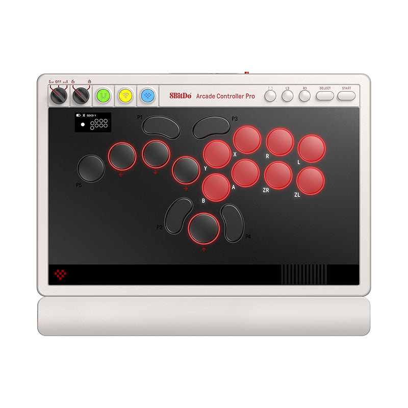
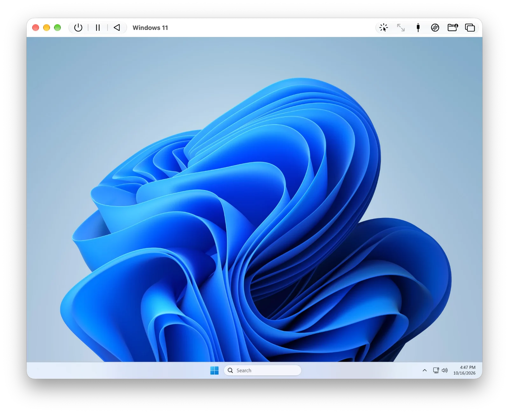

科技產品 T1

Arcade Controller Pro官方產品圖，非舊款Arcade Controller。 8BitDo
8BitDo 開放 Arcade Controller Pro 預購，官方商店標示十一月三十日出貨
發佈時間
8BitDo／Arcade Controller Pro
這款無搖桿格鬥控制器以更緊密的按鍵配置、機身螢幕與磁吸腕托提供自訂操作；目前是預購，不是已全面到貨。
- 官方商店列價119.99美元，標示11/30出貨，提供N與白色版本；稅費與運送另依地區。
- 配備1.47吋螢幕、五個可程式化按鍵、磁吸腕托及可更換低矮機械軸。
- 官方列出Windows、Switch與Switch 2支援，連線方式依平台不同；沒有宣稱原生支援所有遊戲主機。
完整報告收合報告
事件背景與影響
機身直接調整映射與顯示輸入能降低設定阻力，但競技場合仍須遵守個別賽事對巨集及同時反向輸入處理的規定。
事件與發佈依據
10/23媒體已記錄預購開始，Engadget於10/25跟進；官方產品頁及商店確認預購入口、119.99美元與11/30出貨。本次是六月揭露後的預購狀態變更，不稱今日首次發表。
收錄紀錄
以8BitDo與Arcade Controller Pro組合查10/12–10/25十四份日報無命中，再核對同窗50列產品表，未見此次預購事件。
尚待確認
出貨日為原廠預定，不保證各地同日收到。商店HTML同時含Sold out與Add to cart狀態，不能據此推定每個規格或地區現貨；巨集功能不等於所有賽事允許。圖為Pro新款，不以舊Arcade Controller替代。
相關實體與概念
8BitDo、Arcade Controller Pro、格鬥遊戲、無搖桿控制器、按鍵映射、SOCD、預購
科技產品 T2

UTM官方Windows 11示範畫面；不是本報實測，也不是遊戲相容性保證。 UTM專案；Windows圖像屬相關權利人
UTM 5.0 系列推出正式版，Windows 圖形加速仍保留實驗性限制
發佈時間
UTM專案／UTM v5.0.8
UTM正式版把Windows圖形加速、Linux Vulkan及虛擬機快照等能力納入新系列，5.0.8並修正缺少Rosetta時的加速備援與安裝停頓。
- macOS上的Windows 11可使用新圖形驅動，官方明列仍屬實驗性，遊戲相容性有限。
- Linux客體可使用Vulkan 1.3；快照、USB轉接及Apple虛擬化功能另受主機系統版本限制。
- 最低支援版本提高至macOS 12與iOS 15；官方建議升級前關閉所有虛擬機，避免暫停狀態無法恢復。
完整報告收合報告
事件背景與影響
虛擬機的可用範圍從一般桌面工作延伸到更多圖形應用，但支援圖形API不等於所有遊戲與工作負載都能可靠執行。
事件與發佈依據
官方GitHub release v5.0.8於10/17 02:44:56Z發布，prerelease=false；前一版5.0.7及更早5.0系列均標測試版。本次收錄正式穩定發布，不用10/26媒體轉載刷新日期。
收錄紀錄
以UTM與5.0組合查十四份日報無命中，同窗產品表亦未見此正式版；不是把早前測試版功能重新當作今日發明。
尚待確認
不同圖形後端與作業系統支援範圍不同，不能說所有Mac或iOS均可執行3A遊戲。5.0.7曾列出的高刷新率修正已撤回，未納入本報功能清單。配圖為官方Windows 11示範，不是本報實測或效能證明。
相關實體與概念
UTM、QEMU、虛擬機、DirectX、Vulkan、DXMT、Apple Silicon、快照
全球焦點 1
塞爾維亞 Vucic 承認國會選舉失利，學生支持名單預估取得過半席次
發佈時間
長期主導塞爾維亞政治的Vucic承認所屬陣營失利，表示學生支持的Students' List將贏得最多席次，貝爾格勒出現慶祝人潮。
- Vucic依樣本推估，學生名單在250席國會中可獲135至140席，其陣營約105席。
- 學生運動源於Novi Sad車站頂棚倒塌及問責訴求，之後吸引更廣泛社會支持。
- 當時仍未公布最終完整結果，不能把陣營推估寫成選委會認證席次。
完整報告收合報告
事件背景與影響
反貪腐街頭運動轉為議會選舉力量，可能改變政府組成及改革方向，但認敗與正式席次認證、組閣完成是不同階段。
事件與發佈依據
Reuters認敗專稿10/25 16:43 EDT，即20:43Z；不是使用滾動頁清晨的開頁時間描述夜間結果。
收錄紀錄
十四份日報未見此次國會選舉認敗；較早學生示威與選前預測不等於今日選後承認結果。
尚待確認
席次仍為初步估計，不預先指定新總理。外國介入是Vucic的指控，非獨立查證；選舉失利不等於所有制度與政治影響力立即移轉。
相關實體與概念
塞爾維亞、Aleksandar Vucic、SNS、Students' List、國會選舉、反貪腐、組閣
全球焦點 2
續報｜巴西總統決選實際投票，臨時延長兩小時後恢復計票
發佈時間
Lula與Flávio Bolsonaro的決選因交通與天候問題出現延長投票安排，部分投票站已關機，引發執行混亂；計票其後恢復。
- 兩位候選人分別以其支持區的交通或降雨問題提出延長需求，法院下令延長兩小時。
- 部分投票所收到通知時已關閉，後續釐清仍開放站點的適用範圍；程序不能概括為所有機器重新啟動。
- 計票結果在延長時段後恢復發布；本報截至截點未取得可核實的最終勝者，不宣布任何一方當選。
完整報告收合報告
事件背景與影響
延長措施牽涉投票權與程序一致性，可能引發法律爭議。計票尚未完成時，局部領先不能當作勝選結果。
事件與發佈依據
Reuters於10/25 08:01 EDT報導實際投票；晚間法院延長投票、約22:00Z恢復發布計票的新進展亦在凍結截點前。
收錄紀錄
10/25已收錄最後電視辯論；今日從競選進入實際決選與法院處理投票障礙，非重刊辯論或民調。
尚待確認
初步領先會隨地區開票順序改變；候選人或支持者對干預、舞弊的指控不是司法認定。滾動頁早上首發時間與晚間更新不同，不把延長令誤寫成上午已發布。
相關實體與概念
巴西、Lula、Flávio Bolsonaro、Cristiano Zanin、TSE、投票權、計票
全球焦點 3
續報｜以軍落實西岸通行限制，希伯崙市府稱逾兩千六百人流離失所
發佈時間
以軍持續在希伯崙一帶搜索，宣布多數持許可巴勒斯坦工人週日及週一不得進入以色列屯墾區工作，市府稱行動已使大量居民離家。
- 軍方宣布新的工作通行限制，進入以色列的關卡將維持關閉至選舉後。
- 希伯崙市府稱逾2,600人流離失所；此為地方政府統計，非本報獨立清點。
- 以軍稱週末逮捕40名與武裝組織有關的人，相關身分與指控仍須查證。
完整報告收合報告
事件背景與影響
軍事搜索與封鎖直接影響居民工作、物資及就醫通行；以色列選舉前的安全措施也牽涉對平民的影響與必要性爭議。
事件與發佈依據
AP於10/25 08:03:37Z報導當日新增工人通行限制與軍事行動中的撤離情況。
收錄紀錄
10/24已收錄希伯崙附近攻擊及準備封鎖命令；今日新增措施實施、工作通行受限及市府公布的流離失所情況。
尚待確認
撤離人數與拘捕身分分別出自市府及軍方，不能當作全面獨立認定；拘捕不等於定罪。措施期限及各關卡執行情況可能變動，不提供個人路線安全保證。
相關實體與概念
以色列、約旦河西岸、希伯崙、通行許可、屯墾區、流離失所、平民保護
全球焦點 4
委內瑞拉反對派領袖 Machado 返國，選舉時程與政治安排仍未確定
發佈時間
María Corina Machado在離境近一年後返回委內瑞拉，於Lara州教堂露面。她的團隊表示將推動自由選舉，但暫代政府與美方安排仍是重要變數。
- Reuters目擊其在教堂外受到支持者迎接，團隊稱其後將以公路前往Caracas。
- 她計畫接觸政治囚犯家屬、災民及民主運動人士，推動明確選舉日期。
- 美國持續支持與暫代政府的協商；Machado所屬運動並未參與所有現有談判。
完整報告收合報告
事件背景與影響
反對派領袖重新在國內活動可能改變協商與動員格局；實際返國不等於競選資格、自由選舉日期或人身安全已獲保障。
事件與發佈依據
AP於10/25 16:02:42Z報導實際返國，Reuters當日19:18Z更新行程與美方反應，均早於截點。
收錄紀錄
十四日報未見此次實際返國事件；與先前流亡、領獎及返國意向分開。
尚待確認
返國具體安全安排未完整公開，不能推定美方全面支持其所有政治主張。團隊規畫與已完成活動分開，不把未來選舉承諾當作制度已恢復。
相關實體與概念
委內瑞拉、María Corina Machado、Delcy Rodriguez、Caracas、政治協商、選舉
全球焦點 5
烏克蘭公布新一夜空襲傷亡，Zelenskyy 要求加速愛國者攔截彈交付
發佈時間
烏方稱多地住宅、能源及商業設施遭襲，第聶伯羅彼得羅夫斯克地區至少四死。Zelenskyy要求落實已談妥的防空攔截彈供應。
- 烏空軍稱俄方投入153架無人機，119架被擊落或壓制，並報告多處命中。
- 烏方公布第聶伯羅彼得羅夫斯克地區四死，Vinnytsia及Kharkiv另有傷者，包括救援人員。
- Zelenskyy呼籲加快愛國者攔截彈交付；這是供應要求，不代表新增飛彈已到貨。
完整報告收合報告
事件背景與影響
空襲持續影響平民與基礎設施，攔截彈供應與外交談判的進度未必同步；對戰果與攔截率仍需保留消息歸屬。
事件與發佈依據
ABC於10/25 08:02美東時間報導週六晚至週日的新一輪攻擊及烏方當日更新；其中一名重傷者週日不治，並非沿用更早傷亡。
收錄紀錄
十四日報未見此一夜、第聶伯羅彼得羅夫斯克等地的新攻擊與更新統計；昨日Starlink恢復及條款爭議不再另占名額。
尚待確認
攔截及目標數主要來自交戰方，未全面獨立核實。ABC地區22傷與地方Synelnykove13傷範圍不同，未混加成一份統計；談判預期不等於停火已落實。
相關實體與概念
烏克蘭、俄羅斯、Zelenskyy、Patriot、無人機、能源設施、平民傷亡
全球焦點 6
風暴 Boelo 重創英國北部交通與電力，強風向歐洲大陸移動
發佈時間
Boelo帶來危險強風，蘇格蘭、北愛爾蘭及英格蘭北部出現停電與交通中斷。風暴東移後，荷蘭及北歐也採取防範措施。
- 英國氣象局報告Argyll and Bute陣風達84mph，約135km/h；這是陣風而非持續風速。
- AP報導約82,000戶停電，機場、渡輪、鐵路及道路受影響。
- 阿姆斯特丹機場警告航班延誤與取消，部分北歐交通亦因強風採取限制。
完整報告收合報告
事件背景與影響
短期內連續風暴增加交通與電網復原壓力，航空、鐵路與海運的限制會隨地方狀況變動，不能以單一預報代表所有地區。
事件與發佈依據
AP於10/25 10:37:28Z報導週日英國北部新影響；後續轉載更新加入荷蘭海上救援，均在24小時窗內。
收錄紀錄
十四日報未見本次Boelo造成的週日停電與交通中斷；星期五Austen侵襲南部只是前情，不混算為今日新災情。
尚待確認
停電戶數是報導快照，不代表所有家庭在截點仍停電；陣風與颶風持續風速不能直接比較。各項警報依當地更新，未據此保證航班或道路可用。
相關實體與概念
Boelo、英國、蘇格蘭、Met Office、Schiphol、強風、停電
全球焦點 7
加彭外海 Prospector 5 鑽井平台沉沒，搜救與傷亡確認持續
發佈時間
Borr Drilling旗下Prospector 5在升降與預壓作業中失去穩定沉沒。115人中110人已確認安全，另外五人的安危在不同發布版本中仍有差異。
- 公司初報115人在平台上、110人安全，五人未確認，並啟動緊急應變。
- 初步說法為預壓時一支腳發生海床貫入，導致失穩；這仍是初步資訊，不是最終調查結論。
- Reuters後續引三名消息源稱一死四失聯，但政府當時尚未確認死亡，仍稱五人失聯。
完整報告收合報告
事件背景與影響
海上準備作業亦可能造成重大安全事故，搜救、人員照護與原因調查應優先；事故對作業及生產的影響尚需後續核實。
事件與發佈依據
Reuters10/25 02:30 EDT報導公司週日確認與搜救，官方新聞稿10:22Z發布。事故發生於10/24 19:37Z、在24小時窗外；本則依週日新確認與後續搜救收錄。
收錄紀錄
十四日報未見此事故；清楚區分較早沉沒與本窗內公司確認、失聯處理及停產資訊，不把新聞稿日期改成事故日期。
尚待確認
五人失聯與一死四失聯是不同來源／時點口徑，不能相加；死亡尚待官方確認。未證實油污外洩或完整設備損失，不用AI產生的地圖冒充現場照片。
相關實體與概念
加彭、Borr Drilling、Prospector 5、BW Energy、海上鑽井、預壓、搜救
全球焦點 8
葡萄牙警方再度清除里斯本住房抗議營地，拘捕與輕傷人數待彙整
發佈時間
房價與租金壓力下，示威者在遊行後於Rossio廣場搭設帳篷。警方警告移除後進場，帶走部分示威者，並傳出輕傷。
- 警方於週日凌晨進入營地，先前曾要求示威者移除帳篷，部分警員配有警犬。
- Reuters首報稱有人被捕及輕傷，但當時完整人數尚未確定。
- 示威者要求改善住房可負擔性，反對其認為會削弱租客保障的政策提案。
完整報告收合報告
事件背景與影響
住房負擔引發持續動員，公共空間管理與集會權利產生衝突；警方必要性與使用武力的程度仍須分開檢視。
事件與發佈依據
Reuters10/24 23:28 EDT，即10/25 03:28Z，報導週日凌晨兩時後的新清場，不是10/20較早行動。
收錄紀錄
十四日報未見此次週日清場；與更早里斯本或Porto的不同清場事件分開，不重用舊拘捕數。
尚待確認
不同時點及城市的人數不可混用，也不把10/20的55人拘捕數移到今日。租法提案、通過初讀與正式生效不同；警方與示威者對行動合法性的看法不等於法院判決。
相關實體與概念
葡萄牙、里斯本、Rossio、住房負擔、租客保障、集會自由、警察執法
全球焦點 9
美國四角地區新增洪水監視，退水後仍面臨污水與電力危害
發佈時間
Arizona、Colorado、New Mexico與Utah交界一帶在連日豪雨後仍可能再降雨，部分河水雖退，災區仍有淤泥、污水與停電。
- 國家氣象局對四角地區多處發布洪水監視，預防追加陣雨與雷暴。
- New Mexico的San Juan County稱部分洪水退去，但污水處理問題使泥沙受到污染。
- 地方仍有停電及清理需求，尚無完整受損住宅與撤離人數統計。
完整報告收合報告
事件背景與影響
退水不是復原完成，飽和土壤與失效設施使少量追加降雨也可能造成問題；災損與撤離規模仍待官方彙整。
事件與發佈依據
AP10/25 17:18:03Z報導週日新警戒與災區狀況；多日前降雨與撤離是背景，不稱今日才開始洪災。
收錄紀錄
十四日報未見本次四角地區週日洪水監視及清理危害更新，不與其他地區洪水合併。
尚待確認
洪水監視代表條件可能形成，不等於每處已淹水。地方官員未聽聞死亡不等於全區正式零傷亡認證；舊露營區照片未冒充週日新現場。
相關實體與概念
美國四角地區、San Juan County、NWS、洪水監視、土壤飽和、污水、復原
全球焦點 10
續報｜Vance 減弱為熱帶風暴，墨西哥仍須防範豪雨與危險長浪
發佈時間
Vance受風切與乾空氣影響減弱，在Acapulco西南西外海緩慢移動。NHC仍預警墨西哥西部可能有洪水、土石流與危險離岸流。
- 第18報位置為14.9N、104.2W，距Acapulco約510公里，最大持續風速110km/h。
- 預報多地雨量約2至4英吋、局部7英吋，陡峭地形有洪水與土石流風險。
- 當時無沿岸觀察或警報，但南部及西南部海岸仍可能受危險長浪與離岸流影響。
完整報告收合報告
事件背景與影響
熱帶氣旋分類只反映風力，雨量及地形效應仍可能造成重大危害；沿岸沒有風暴警報也不代表適合下海。
事件與發佈依據
NHC固定第18報10/25 21:00Z，列為熱帶風暴、最大持續風速110km/h；與較早第17報仍列颶風分開。
收錄紀錄
10/24已收錄Vance增強為二級颶風；今日新增降級及西移預報，但降級不代表豪雨與海況危害解除。
尚待確認
位置、風速與雨量皆為第18報快照及預測，可能再調整，不能保證登陸或不登陸。風速單位與陣風不同，也不把另一個Olana系統的數值混入。
相關實體與概念
Vance、墨西哥、NHC、熱帶風暴、風切、豪雨、離岸流
研究備註
時間、來源與後續追蹤
研究截點 2026-10-26 08:03:35（Asia/Taipei）
研究時間與範圍
研究截點：2026-10-26 08:03:35（Asia/Taipei）。全球新聞：2026-10-25 08:03:35 至 2026-10-26 08:03:35（Asia/Taipei）。科技產品：2026-10-12 08:03:35 至 2026-10-26 08:03:35（Asia/Taipei）。